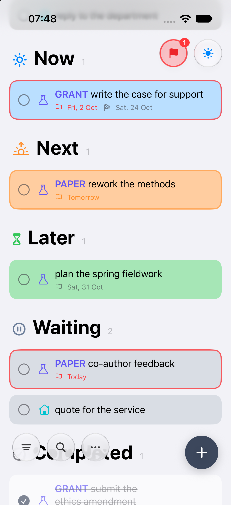
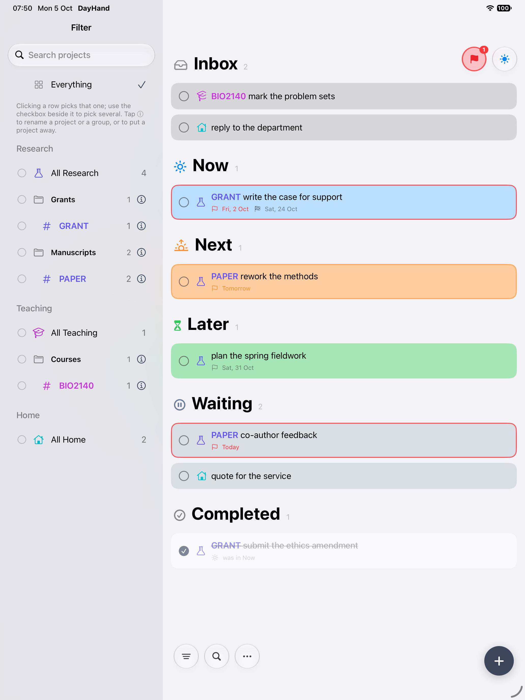
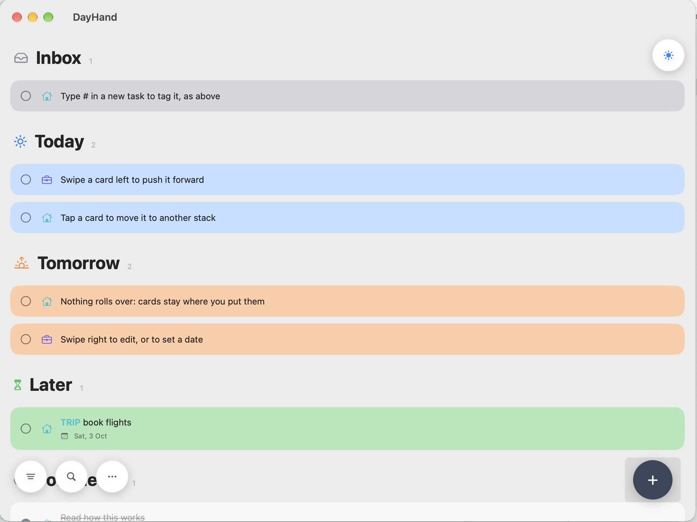

A task is not a date.
Preparing a talk, writing a manuscript, building a feature, renovating a room — most real work is not created and finished on one particular day. Date-led to-do lists make you pick a day anyway, then call the task overdue when that day passes. So you reschedule it, or chop it up, to make the app agree with reality.
DayHand lets a task simply stay active for as long as it takes.
DayHand keeps them separate — because they are different things.
Now is what you are working on. Next is what you mean to pick up after it. Later is kept, but consciously not now. New cards land in Inbox until you decide. A task can sit in Now for a week — there is nothing wrong with that, and nothing says otherwise.
Sent for review, a quote not yet received, a reply owed to you. The task is still live, but you cannot advance it. It moves out of the way without being forgotten, and comes back to Now, Next or Later the moment the other side moves.
When should I think about this again? A reminder brings a task back to your attention on the day you asked — a notification, and a coloured edge: orange within three days, red on the day and after. It does not decide where the task belongs, and it moves nothing.
When must this actually be finished? Added once a reminder exists, and shown on the card. Because a deadline is only ever a real one, it means something — a task can sit in Now all week and keep the same genuine Friday deadline.
Tasks stay exactly where you put them. Tomorrow arriving does not change what you intended to work on, and a reminder coming due does not move anything by itself — it tells you, and you decide. The list stays a picture of what you mean to do, rather than a picture of the calendar. Later does not mean forgotten, it means not yet; Waiting does not mean dropped, it means not mine right now. And when something is genuinely overdue, that word still means something.



A project runs for weeks. Drawings in progress sit in Now, the next revision in Next, future ideas in Later. Once a set goes to the client for approval it moves to Waiting, with a reminder to follow up — and a deadline only on the actual submission date.
Jobs depend on customers, parts and other trades. Today's jobs in Now, this week's in Next, the rest in Later. A job held up by a valve on order or a customer who has not confirmed goes to Waiting, with a reminder to chase — without pretending the job was due today.
"Write the thesis" is not a Tuesday task. The chapter you are writing stays in Now for as long as it takes, the next one in Next, later chapters in Later. It goes to Waiting while your supervisor has it. Deadlines are the real submission dates, and only those.
An analysis or a manuscript stays in Now while it is actually moving. Upcoming experiments in Next, longer-term ideas in Later. A manuscript with co-authors, equipment on order or an experiment awaiting data all go to Waiting. Grant and journal dates are genuine deadlines.
A feature takes several days. The one you are building sits in Now, the next in Next, the backlog in Later. When it depends on an API key, client feedback or a pull request someone else has to review, it moves to Waiting. The reminder says when to follow up; the deadline says when the release actually has to ship.
One card the whole week. The Friday deadline never changed, and the task was never recreated, split up or pushed to a new day.
Type #TRIP and the card carries that project: a coloured
prefix, a category filled in for you, and a name you can change on
every card at once. Projects gather into groups, and the filter narrows
the list to any of them without complicating the main view.
Everything is kept on your device. Two of them sync through a single file you pick in your own iCloud Drive — no DayHand account, no server, nothing to sign up for. Import and export as CSV, and a backup is taken automatically each day, plus any you take by hand.
Any to-do app can show what you owe. DayHand also shows what you got done — this week and last, grouped by the day you finished it. The counterweight to a list that otherwise only ever looks forward: progress measured as what you finished.
iOS 17 or later
macOS 14 or later
One link for both — it is one app and one target, not a separate Mac version. If the link opens the App Store instead of TestFlight, TestFlight is not installed on that Mac yet.
Get it on MacAlready running DayHand on your Mac from a build you made yourself? The TestFlight build is sandboxed — App Store Connect will not take one that is not — and a sandboxed app keeps its data somewhere else. It will open with no cards, which looks alarming and is not: your old file is untouched where it always was. If you sync through iCloud Drive, open More → Use Existing Sync File… and pick the same file again, and everything comes back.